Serial adult series T402–T428 (27 sections, 343 707 bins) · Stereo-seq bin100 · reproduced with the repository optimal_transport__tr_axeses
Nodes of a section: 1D cortical columns (~200 µm wide, complete L2–L6) or 2D column × depth-bin blocks (8 bins).
Coupling T between the nodes of sections A and B: balanced fused Gromov–Wasserstein
minT (1 − α) Σ MijTij + α Σ (CAik − CBjl)² TijTkl
M: distance of node profiles (smoothed PCA); C: distance along the cortex (1D) or in the column × depth plane (2D, mm); α = 0.7.
Training loss (weight λ = 770): the latent mean of node i in A is pulled to the nodes of B that T assigns to it
L = − Σj Tij/Ti· log softmaxj(cos(zA,i, zB,j)/τ)
Joint mode: T is recomputed from the current latent every 500 steps (after 2 000), so coupling and latent are refined together. No adversarial loss in the FGW models.
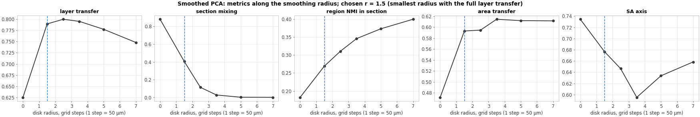
Rule: the smallest radius on the plateau of the layer transfer (within 2% of its best value). Chosen r = 1.5 grid steps.
xtrl = fl + θ ct + Σm μm(r) gml + ε
Synthetic test (tests/test_areal.py): three planted region components are recovered with |r| ≥ 0.95; pure noise gives no axis with split-half ≥ 0.8.
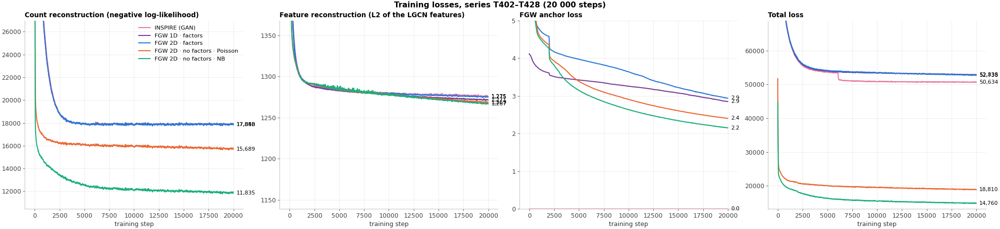
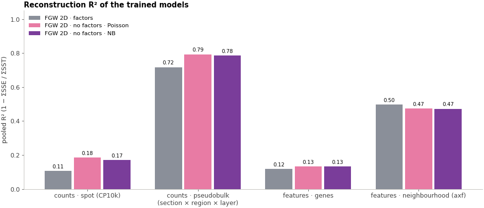
| model | counts_spot_pooled_R2 | counts_pseudobulk_pooled_R2 | features_genes_pooled_R2 | features_axf_pooled_R2 |
|---|---|---|---|---|
| FGW 2D · factors | 0.106 | 0.717 | 0.117 | 0.496 |
| FGW 2D · no factors · Poisson | 0.184 | 0.792 | 0.132 | 0.474 |
| FGW 2D · no factors · NB | 0.171 | 0.784 | 0.133 | 0.472 |
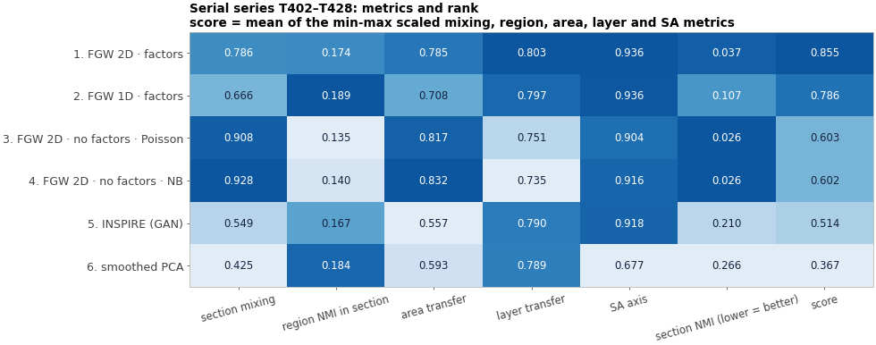
Best model: FGW 2D · factors (score 0.855).
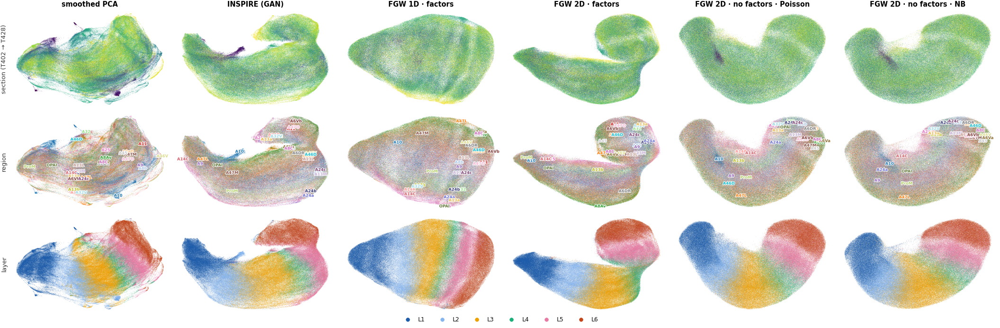
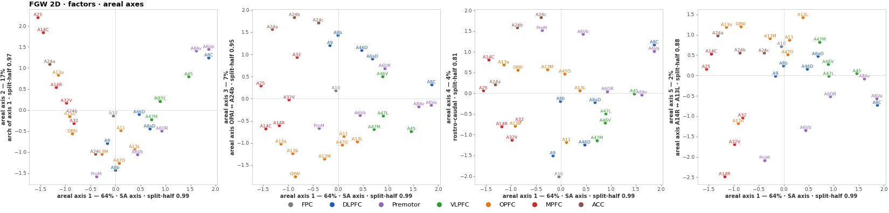
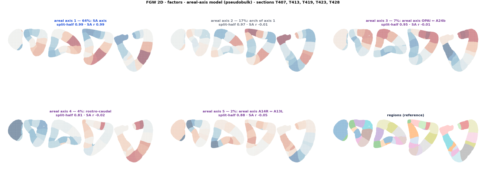
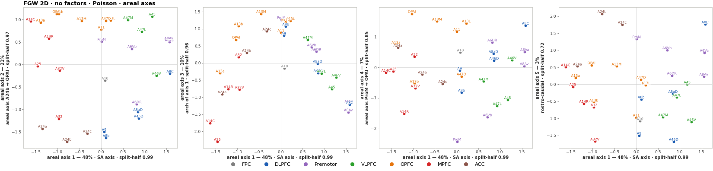
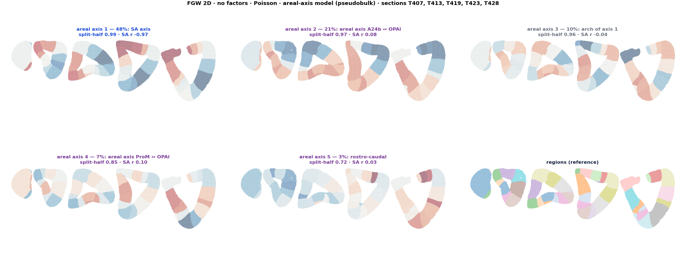
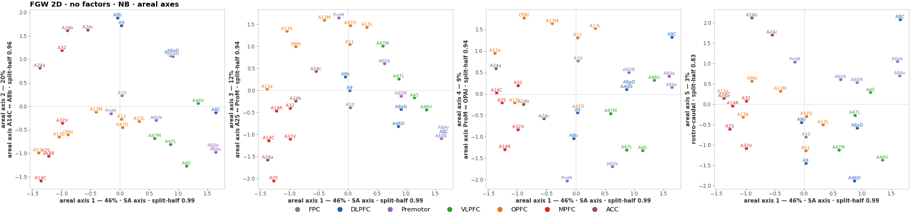
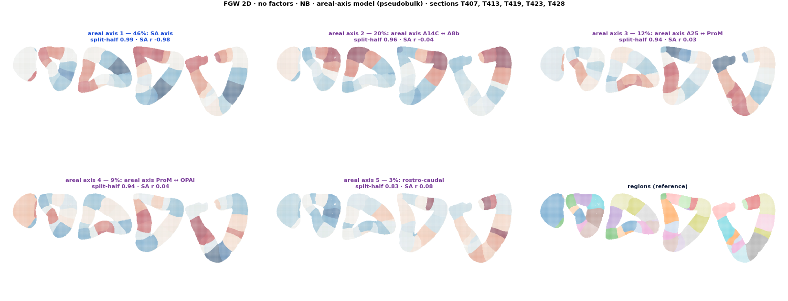
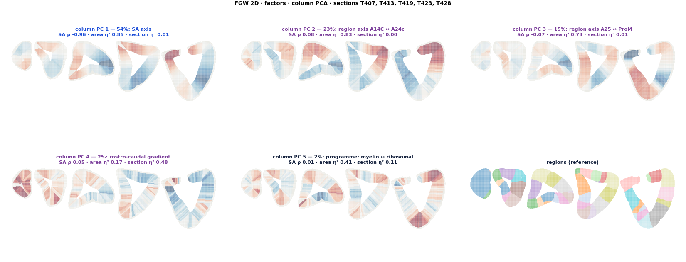
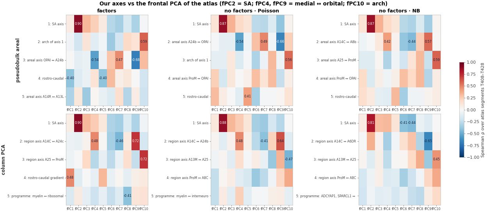
| model | comp | reading | best_fPC | rho_best | rho_fPC2 | rho_fPC4 | rho_fPC9 | rho_fPC10 |
|---|---|---|---|---|---|---|---|---|
| factors | 1 | SA axis | 2 | 0.90 | 0.90 | 0.24 | -0.32 | -0.02 |
| factors | 2 | arch of axis 1 | 10 | 0.59 | -0.19 | -0.11 | 0.14 | 0.59 |
| factors | 3 | areal axis OPAl ↔ A24b | 9 | -0.68 | -0.09 | -0.54 | -0.68 | 0.31 |
| factors | 4 | rostro-caudal | 5 | -0.40 | -0.13 | 0.14 | 0.00 | -0.19 |
| factors | 5 | areal axis A14R ↔ A13L | 3 | -0.36 | 0.11 | 0.02 | 0.07 | -0.21 |
| no factors · Poisson | 1 | SA axis | 2 | 0.87 | 0.87 | 0.19 | -0.40 | 0.04 |
| no factors · Poisson | 2 | areal axis A24b ↔ OPAl | 9 | -0.66 | -0.10 | -0.54 | -0.66 | 0.24 |
| no factors · Poisson | 3 | arch of axis 1 | 10 | 0.56 | -0.09 | -0.13 | -0.05 | 0.56 |
| no factors · Poisson | 4 | areal axis ProM ↔ OPAl | 8 | 0.31 | -0.17 | 0.01 | -0.23 | 0.07 |
| no factors · Poisson | 5 | rostro-caudal | 5 | 0.41 | 0.07 | -0.12 | 0.02 | 0.14 |
| no factors · NB | 1 | SA axis | 2 | 0.87 | 0.87 | 0.20 | -0.35 | 0.03 |
| no factors · NB | 2 | areal axis A14C ↔ A8b | 9 | 0.57 | -0.00 | 0.42 | 0.57 | 0.01 |
| no factors · NB | 3 | areal axis A25 ↔ ProM | 10 | 0.59 | -0.12 | -0.30 | -0.23 | 0.59 |
| no factors · NB | 4 | areal axis ProM ↔ OPAl | 8 | 0.33 | -0.15 | -0.05 | -0.30 | 0.07 |
| no factors · NB | 5 | rostro-caudal | 6 | -0.34 | 0.10 | -0.10 | 0.03 | 0.07 |
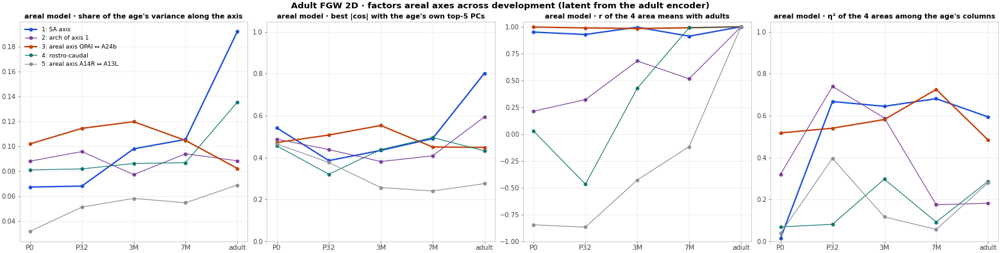
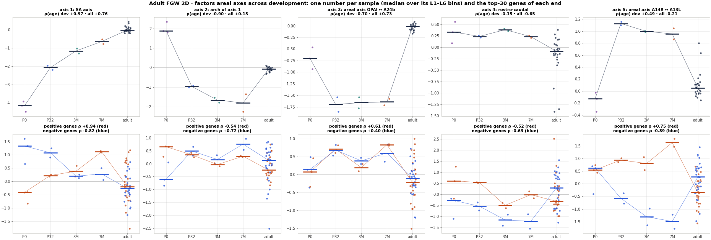
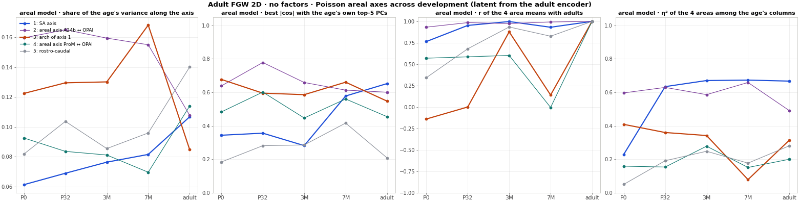
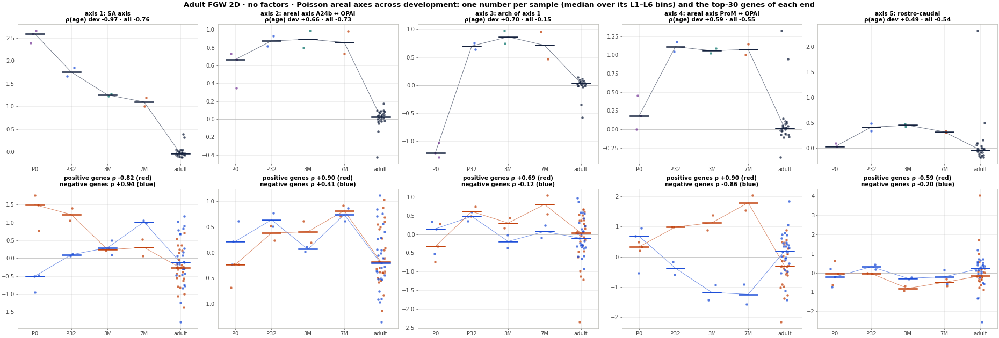
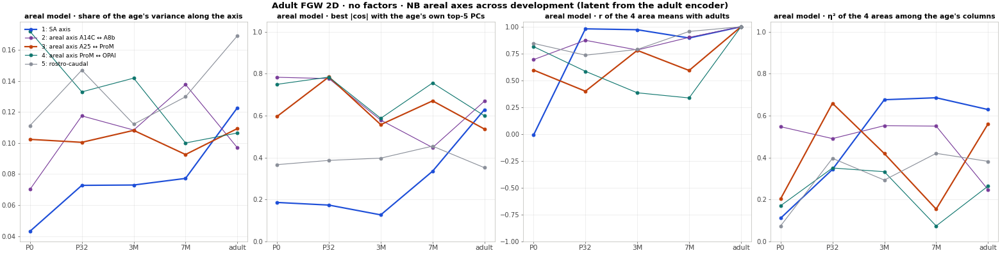
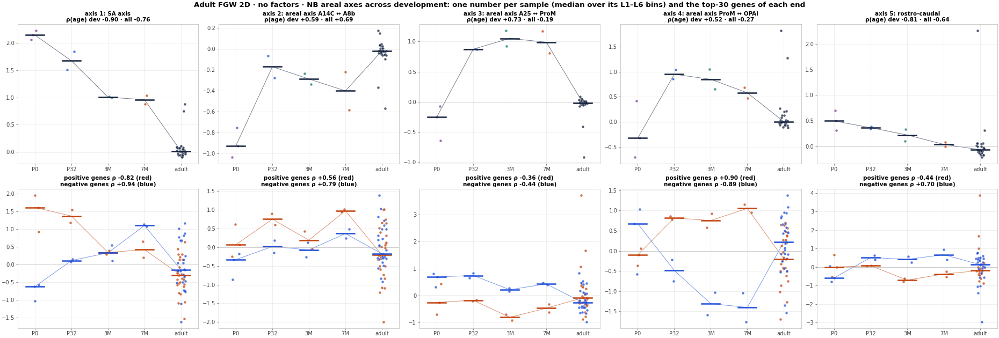
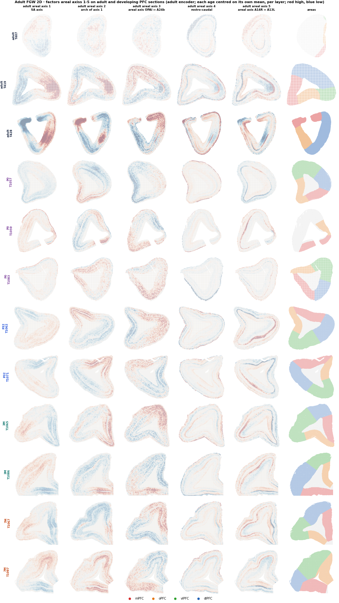
| file | passed |
|---|---|
| test_areal | 2 |
| test_columns_fgw | 2 |
| test_inspire | 5 |
| test_metrics | 3 |
| test_reference | 27 |
| test_training_reference | 1 |
| check | model | sum | count | all_passed |
|---|---|---|---|---|
| areal axis | fgw1d_factors | 4 | 4 | True |
| areal axis | fgw2d_factors | 5 | 5 | True |
| areal axis | fgw2d_nb | 5 | 5 | True |
| areal axis | fgw2d_poisson | 5 | 5 | True |
| areal axis | inspire_gan | 3 | 3 | True |
| areal axis | smoothed_pca | 3 | 3 | True |
| atlas | fgw2d_factors | 5 | 5 | True |
| atlas | fgw2d_nb | 5 | 5 | True |
| atlas | fgw2d_poisson | 5 | 5 | True |
| column PC | fgw1d_factors | 3 | 3 | True |
| column PC | fgw2d_factors | 3 | 3 | True |
| column PC | fgw2d_nb | 3 | 3 | True |
| column PC | fgw2d_poisson | 3 | 3 | True |
| column PC | inspire_gan | 3 | 3 | True |
| column PC | smoothed_pca | 3 | 3 | True |
| metric | fgw1d_factors | 16 | 18 | False |
| metric | fgw2d_factors | 18 | 18 | True |
| metric | fgw2d_nb | 18 | 18 | True |
| metric | fgw2d_poisson | 18 | 18 | True |
| metric | inspire_gan | 18 | 18 | True |
| metric | smoothed_pca | 18 | 18 | True |
Standalone HTML files (data and plotly.js embedded); rebuild with python scripts/10_figures.py 3d.